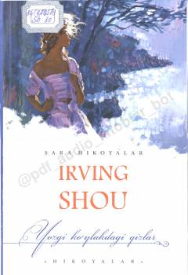

YKTaniqli yozuvchi Irving Shouning hayotiy va ta'sirli hikoyalar to'plami.
Ushbu kitobda taniqli yozuvchi Irving Shouning insoniy munosabatlar va hayotiy vaziyatlar tasvirlangan sara hikoyalari o'rin olgan. Asar qahramonlarining taqdiri va kechinmalari o'quvchini o'ylantiradi va hayotiy xulosalar chiqarishga undaydi. To'plamga kiritilgan hikoyalar o'zining ta'sirchanligi bilan ajralib turadi.